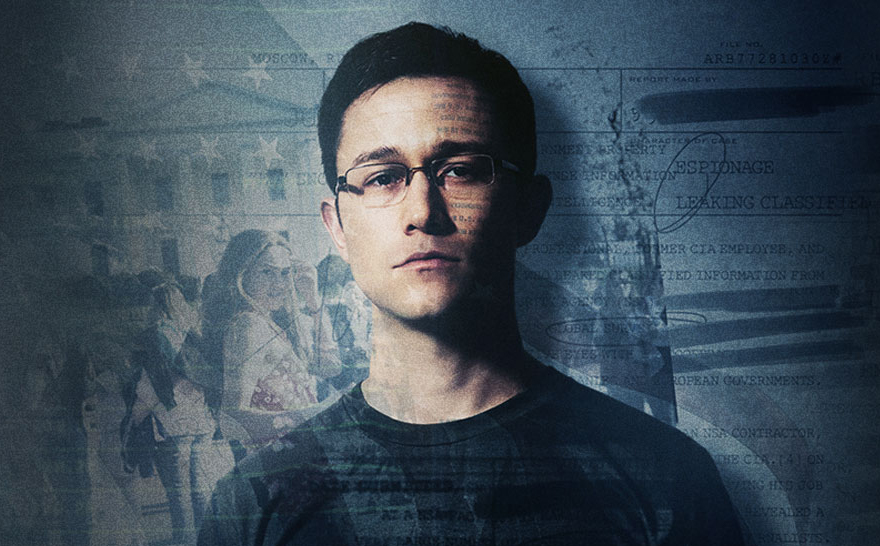
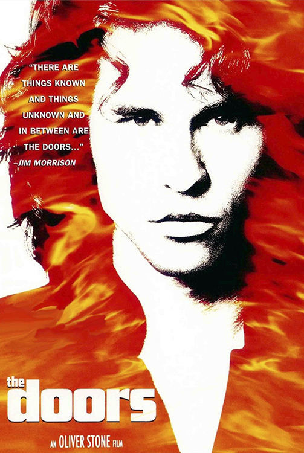
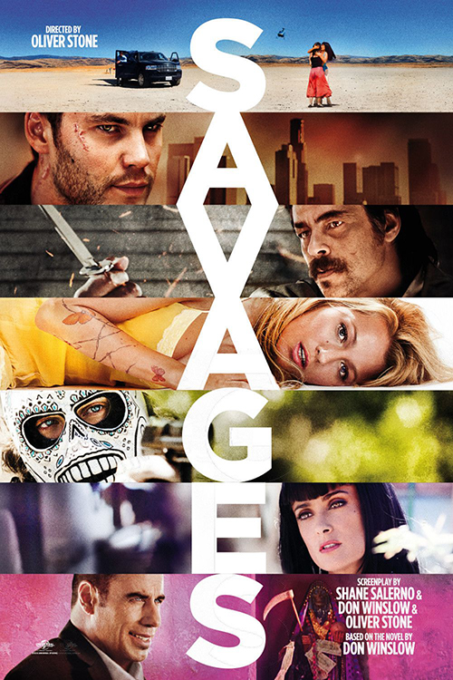

La face cachée de l'espionnage
Edward Snowden, un ancien informaticien américain travaillant pour les services secrets, fait d’importantes découvertes sur son gouvernement. Comme nous tous, il a l’habitude d’utiliser Internet sans se douter de ce qui se cache derrière. Mais quand il découvre ce que dissimule son pays, il est bouleversé. Les données personnelles de millions d’utilisateurs sont récoltées et stockées par le gouvernement. Au-delà de cette intrusion dans notre vie privée, ces pratiques créent une énorme pollution. Il est temps de prendre conscience des conséquences du stockage de nos données.
Edward Snowden, informaticien et lanceur d’alerte
Edward Snowden est né le 21 juin 1983 en Caroline du Nord, aux Etats-Unis. Il étudie l’informatique dans le Maryland, mais ne termine pas ses études à cause d’une maladie. Plus tard, il devient informaticien. Il est alors repéré par la CIA, qui le recrute. Il travaille dans la sécurité informatique. Snowden est envoyé en mission à Genève, pour renforcer les dispositifs d’espionnage de la CIA en Europe. Il doit connecter les systèmes informatiques des services secrets américains, via un réseau illégal. Il quitte la CIA en 2009 et commence à travailler pour la NSA. On lui donne alors des missions au Japon et à Hawaï. Pendant cette période, il réalise à quel point les services secrets s'introduisent dans la vie des gens. Les données personnelles sont collectées en grande quantité, sous prétexte de lutter contre le terrorisme.

Joseph Gordon-Levitt dans le rôle d'Edward Snowden @leparisien.fr
C’est quand Snowden est à Hawaï qu’il décide d’enregistrer des fichiers compromettants sur une clé USB. Il arrive pour cela à contourner le contrôle de sécurité. Après avoir dérobé ces informations, il se cache à Hong Kong. Le 5 juin 2013, avec l’aide de journaux britanniques et américains, il commence à révéler au monde les actions illégales du gouvernement. Snowden est recherché par la police américaine et n’est plus en sécurité en Chine. Il obtient l’exil en Russie et part à Moscou. Ces révélations lui ont coûté la vie aisée qu’il aurait pu avoir, mais il ne regrette pas ce qu’il a fait.
Quand l'espionnage pollue la planète
Les données qui circulent sur Internet polluent énormément. Il faut beaucoup de place et d’énergie pour les stocker. La collecte de masse du gouvernement représente des milliards de données, elle accentue fortement cette pollution.

Edward Snowden (Joseph Gordon-Levitt) @medias.liberation.fr
Les services secrets et le gouvernement récoltent nos données pour lutter contre le terrorisme et les différentes menaces. La majorité de ces informations sont inutiles à cette surveillance, pourtant leur collecte ne s’arrête pas.
Page suivanteFilms du même réalisateur
-

- 
- 